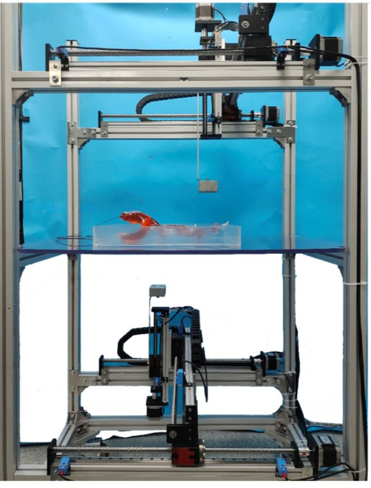

Magnetic navigation · siatguidewire_zhang2022
Magnet gantry
SIAT magnetically steerable guidewire: two-sided permanent-magnet gantry (2022) and arm-held magnet with a guidewire advancer (2023)

1 / 8


- Family
- Magnetic navigation (magnetic-navigation)
- Devices
- 2022: commercial hydrophilic guidewire (LWSTDA35150) joined to an Ecoflex + NdFeB (1:1 mass) soft actuator 2.5 cm long and 1.9 mm in diameter; 2023: 0.035-in (0.89 mm) commercial guidewire with two axially magnetised 0.5 x 2.5 mm N52 NdFeB magnets in a PDMS-filled silicone tube (0.5/1 mm ID/OD); the advancer takes 0.3-5 mm devices (guidewire and catheter), only the guidewire moved in the experiments (xu2023_magnetically Sec. 2.1)
- Degrees of freedom
- 2022: two symmetric gantries, each three linear motors (x, y, z) carrying a rectangular permanent magnet; 2023: 6-DOF UR10 arm + pole-flip stepper; guidewire and catheter advancers with 4 DOF in total (xu2023_magnetically Sec. 2.1)
- Push
- Magnetic
- Twist
- Field direction
- Tested up to
- Phantom
- Sim-to-real
- Yes — A controller or perception model trained in simulation ran on this robot.
Testing
- Highest level
- Phantom
- What was tested
- 2022: ring-passing task (8 mm rings) and path following, 3D vascular phantom; 2023: trajectory following in 3 resin phantoms (ID 10-13 mm, 160-180 mm long), teleoperated navigation to 4 intracranial targets in a 959 mm silicone phantom with pulsatile flow, one path under DSA in the partner hospital's cath room; repeat counts N.R.; pig tests named as future work (xu2023_magnetically Sec. 3)
- Key numbers
- 2022: field 0-20 mT; deflection up to 180 degrees; localisation accuracy 8 mm (ring diameter). 2023: mean tip position error 1.52-1.88 mm and tip angle error 2.36-2.57 degrees over 3 phantoms; deflection up to about 100 degrees; navigation within 1-2 min; advance speeds 1.2-6.06 mm/s (xu2023_magnetically Sec. 3.3)
Mechanism
- Push (translation)
- magnetic (steering); 2022 forward push by hand; 2023 advancer: stepper-driven friction-wheel pair with a spring/screw clamp (xu2023_magnetically p. 4, Fig. S1)
- Twist (rotation)
- field direction; 2023 advancer rotates its linear module with a stepper and gear pair (xu2023_magnetically p. 4)
- Device range
- 2023: advance speed 0-15 mm/s; magnet distance 40-180 mm (xu2023_magnetically p. 4, 8)
- Target anatomy
- 2022: peripheral phantoms (silicone thigh vessels ID 1 mm to 1.6 cm); 2023: femoral artery -> aortic arch -> carotid -> intracranial arteries in a 959 mm silicone phantom (xu2023_magnetically Sec. 3.4)
Sensing and interface
- Force sensing
- none
- Leader and haptics
- no; 2023 teleoperation console with an Xbox joystick through ROS (xu2023_magnetically Sec. 3.4)
- Imaging
- camera in 2022 and on the 2023 bench; 2023 Philips Azurion 7M20 DSA in a cath room, system operated from outside the room (xu2023_magnetically p. 12-13)
- Sterility
- N.R.
Size
- Footprint (mm)
- 2022 system 880 x 620 x 1600; workspace 700 x 500 x 500; 2023 mobile cart, dimensions N.R.
- Mass (kg)
- N.R.
Simulation
- Simulation model
- 2022 kinematic model; 2023 dipole field model, constant-curvature beam and Cosserat rod models (MATLAB bvp5c), COMSOL 5.6 field and tip FEM (xu2023_magnetically Sec. 2-3)
- Sim-trained controller
- yes: luo2025_rlmg (RCAR 2025, full; found by W5): DDPG trained in SOFA+BeamAdapter, UR5 + permanent magnet + this advancer; 4 paths x 3 trials in a femoral-artery phantom; error 2.2-3.1 mm sim -> 2.8-3.8 mm real, time 7-13 s -> 31-67 s (Table I); no success rate
- Studies on this robot
- 2025 · RL-MG: Reinforcement Learning Framework for Magnetic Guidewire Path Following — sim N.R. (error 2.5/3.1/2.2/2.4 mm, time 7.0/13.0/12.0/9.0 s); robot N.R. (error 3.6/3.8/3.1/2.8 mm, time 31.0/64.0/45.0/67.0 s)
Versions
- Lineage
- 2022 RA-L 3D steering system, two-sided permanent-magnet gantry, guidewire fed by hand (zhang2022_magnetic); 2022 RCAR paper of Fu et al. (cited as xu2023 ref. 36; not read); 2023 Adv. Intell. Syst. (Fu ... Du, Xu): UR10 arm carrying a D50 x L25 mm N52 magnet with a pole-flip stepper on a mobile cart, 4-DOF guidewire/catheter advancer, new tip, dipole + Cosserat models, trajectory planning, DSA test (xu2023_magnetically, full)
Sources
- Design and Characteristics of 3D Magnetically Steerable Guidewire System for Minimally Invasive Surgery · IEEE Robotics and Automation Letters, 2022 · doi:10.1109/lra.2022.3146909 [zhang2022_magnetic]
- A Magnetically Controlled Guidewire Robot System with Steering and Propulsion Capabilities for Vascular Interventional Surgery · Advanced Intelligent Systems, 2023 · doi:10.1002/aisy.202300267 [xu2023_magnetically]
Notes
- Notes
- 2026-10-13 coordinator: sim2real corrected from 'none found' (W5_notes.md item 1). | X2 2026-11-08: xu2023 (Wiley, CC BY) received by hand and read in full; first author is Fu (key xu2023_magnetically kept); validation stays phantom; luo2025_rlmg used a UR5, xu2023 a UR10 (same group, different arm).
This record
- Read level
- full — full (zhang2022_magnetic, xu2023_magnetically)
- Picture
- zhang2022_magnetic Fig. 1(b) (two-sided permanent-magnet gantry with phantom) ↗ — licence: publisher copyright (IEEE); grade B
- Picture changes
- native extract; crop; 9 red text labels + red arrows and a yellow outline erased (LaMa by colour mask), grey ghosts on the white background flattened, one yellow line inpainted (OpenCV Telea)
- Found by
- actuated-tip: Search of actuated-tip and magnetic devices.
- Data
- JSON · YAML:
records/robots/siatguidewire_zhang2022.yaml - Correction
- Suggest a correction [repository not created yet]